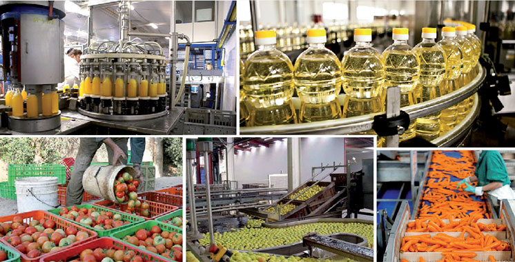
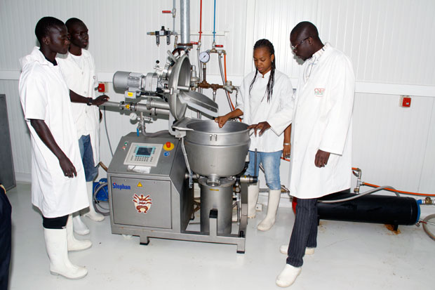
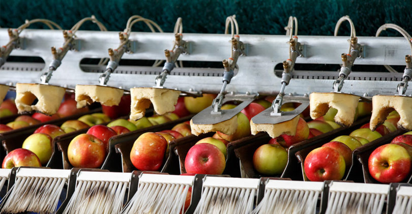

|
|
|||
| Accueil | Transformation | Contact | Idées et Débats |



1. Objectif 4. Informations générales sur la transformation des produits agricoles alimentaires
L’objectif de cette fiche est de mettre à la disposition des techniciens et techniciennes des notions complémentaires
sur quelques concepts de base nécessaires liés à la transformation des produits agricoles alimentaires.
A la fin de la formation, les participants/participantes maitrisent les concepts clés en matière de transformation des produits agricoles alimentaires.
Cette Fiche a été validée par toutes les composantes nationales du monde agricole.
Publique cible
Ce module s’adresse aux formateurs et formatrices seniors, aux agents de vulgarisation et de conseils agricoles
des Services d’Appui Entrepreneurial (animateurs/trices) et aux transformateurs/trices.
2. Méthode pédagogique : Approches, outils, matériels
Approche : La méthode sera participative et interactive avec l’utilisation des illustrations.
La phase pratique consistera à se rendre dans une unité de transformation de produits agricoles alimentaires
pour suivre tout le processus de fabrication du produit fini ou semi fini.
Outils :Salle de formation, vidéo projecteur, papier kraft, marqueurs (pour la phase théorique);
unité de transformation, matière première… (Pour la phase pratique).
Matériels de formation : fiches techniques, papier kraft ; feutres ; matière première et équipement de transformation.
3. Définition des concepts clés en matière de transformation
Lors des formations des apprenants/tes sur ces technologies de transformation, le formateur/trice doit aborder les aspects suivants :
les emballages à utiliser afin de choisir des types d’emballages qui n’ont pas un impact négatif sur l’environnement.
Le coût et la disponibilité de l’emballage en lien avec le prix de revient et de vente des produits finis.
- Le prix et les sources d’approvisionnement des principaux équipements utilisés pour la transformation des produits agricoles.
- L’attention des apprenants sur la nécessité de faire de temps en temps les analyses en vue de s’assurer du maintien de la qualité de leurs produits.